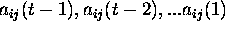

At any moment t each agent has the following information:
a) the parameter Q, which is the objective value of the lecture or play and is the same for all agents;
b) her own history of actions  ;
c) the actions of her local network at time t-1, which was just observed;
d) the actions of the people in the visual field of the individual;
e) a measure of aggregate noise in the hall, which estimates the overall reaction to the play or lecture (perhaps with some error).